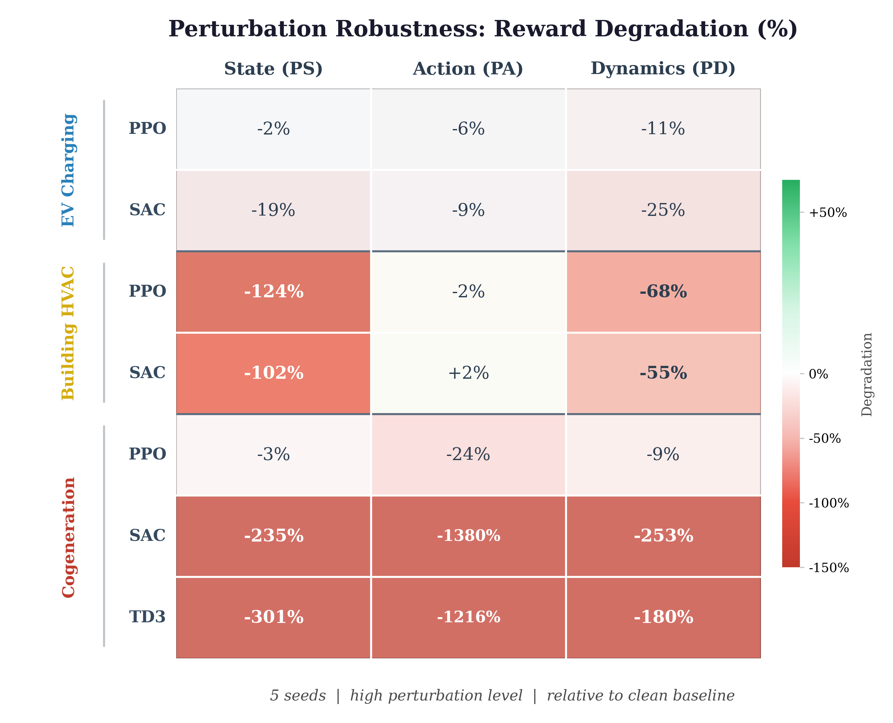
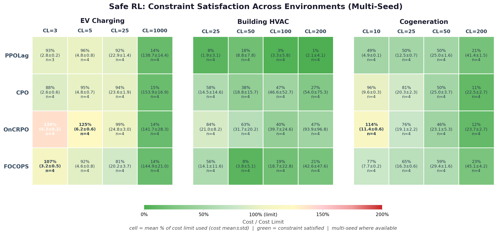
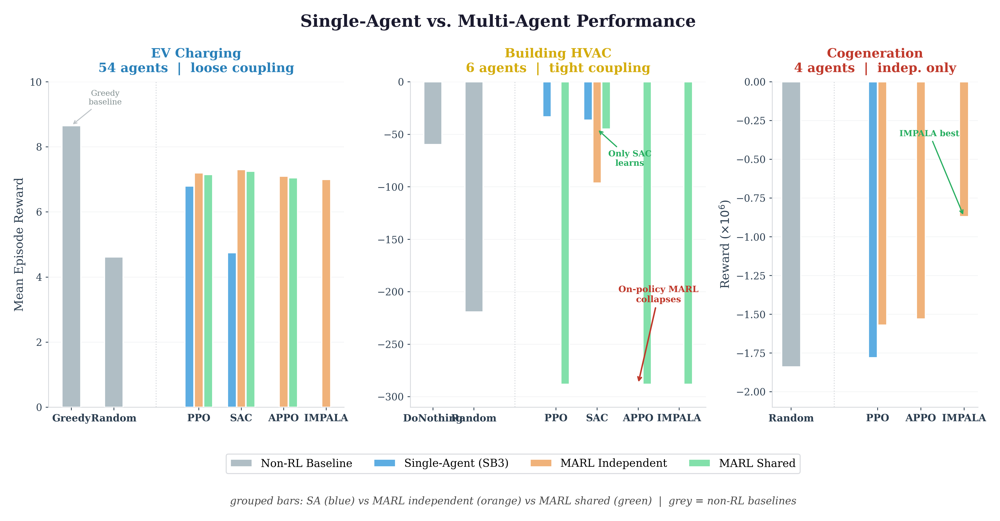
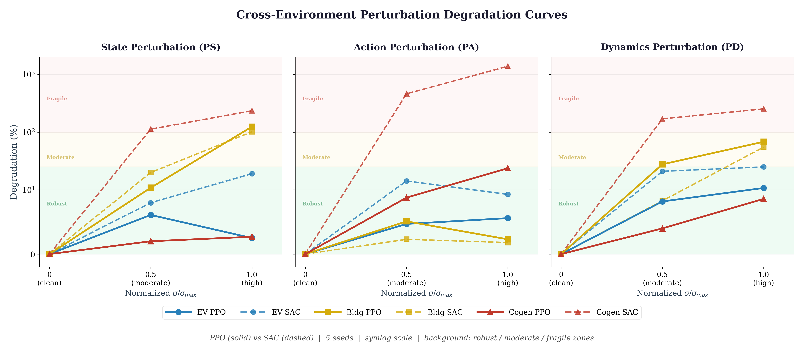

Reinforcement learning has shown promise across sustainable energy domains, yet existing studies typically evaluate a single algorithm on a single environment under idealized conditions, leaving robustness, scalability, and comparative performance largely uncharted. We introduce SustainRL-Bench, a unified study evaluating RL algorithms along three orthogonal axes: perturbation robustness via systematic injection of state, action, and dynamics noise; safe RL via Constrained MDP formulations with environment-specific cost signals; and multi-agent RL via physically motivated decompositions. We study three SustainGym environments — EV charging coordination, building HVAC control, and cogeneration plant dispatch — under three single-agent algorithms (PPO, SAC, TD3), four CMDP algorithms (PPOLag, CPO, OnCRPO, FOCOPS), and four MARL algorithms (PPO, SAC, APPO, IMPALA). Our results challenge the assumption that a single RL approach can serve as a universal controller for sustainable energy systems and underscore the need for domain-specific algorithm selection guided by systematic benchmarking.
Systematic injection of state (PS), action (PA), and dynamics (PD) perturbation across nine intensity levels per channel. Reveals algorithm-specific sensitivity profiles.
Each environment formulated as a Constrained MDP with an environment-specific cost. Four on-policy CMDP algorithms (PPOLag, CPO, OnCRPO, FOCOPS) under varying cost limits.
Physically motivated decompositions: 54 charging stations, 6 thermal zones, 4 turbines. Single vs. shared-policy MARL via Ray RLlib + PettingZoo.
Coordinate charging across a station network: maximize profit while minimizing carbon emissions and network constraint violations.
Control HVAC setpoints in a multi-zone office building: minimize energy consumption while maintaining occupant thermal comfort.
Dispatch a combined heat & power facility: minimize fuel cost, demand shortfalls, and ramping while satisfying complex equipment constraints.
Reward degradation under state, action, and dynamics perturbation across all three environments and algorithms. The on-policy vs. off-policy divide dominates Cogeneration; in Building, off-policy SAC is more robust than on-policy PPO.

Reward–cost trade-offs across cost limits with multi-seed confidence intervals. CMDP effectiveness exists on a spectrum: Building (fully aligned), EV Charging (partially overlapping), Cogeneration (fully orthogonal).

Single-agent vs. multi-agent performance across all three environments. Environment coupling structure, not agent count, determines MARL feasibility.

Algorithm-specific degradation profiles across all three environments under the dominant perturbation channel.

The full thesis is in preparation. Once available, the PDF and arXiv link will be posted here. In the meantime, the source code, data pipeline, and experimental scripts are open source on GitHub.
Browse the Code@mastersthesis{koruturk2026sustainrlbench,
author = {Koruturk, Mehmet},
title = {{SustainRL-Bench}: Benchmarking Reinforcement Learning on
{SustainGym} across Perturbation Robustness, Safe RL,
and Multi-Agent RL},
school = {Virginia Polytechnic Institute and State University},
year = {2026},
type = {Master's Thesis}
}